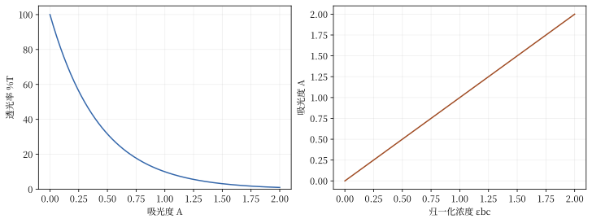

LECTURE 15 · 2026-11-19
光谱分析Ⅰ：辐射、吸收与 Beer 定律
15.1 · ELECTROMAGNETIC RADIATION
光的波动描述与光子能量
光谱分析让样品与一定波长的辐射作用，再把作用前后的光信号变成化学信息。可见光吸收常用于有色组分，也可先把待测物转化为显色产物。临床和环境样品中常同时有多种吸收组分，选波长、控制反应条件和做空白是定量的一部分。
电磁辐射是传播的电场与磁场。平面偏振波的电场、磁场和传播方向相互垂直。波长 λ 是一个完整周期对应的空间距离，频率 ν 是每秒通过定点的周期数，单位 Hz。真空中光速 c 约 2.998×108 m·s−1，满足 c=λν。传播介质改变时频率保持，速度与波长则随介质改变。
ν̃ 为波数，红外谱常用 cm−1，此时先把波长换成 cm。光子能量 E 随频率增加而增加，随波长增加而降低。普朗克常数 h 约 6.626×10−34 J·s。频率与波数符号相近，计算前先看单位。
例如 500 nm 的光对应频率约 6.00×1014 Hz，波数为 2.00×104 cm−1，单光子能量约 3.97×10−19 J。乘阿伏伽德罗常数后，每摩尔光子的能量约 239 kJ·mol−1。把 nm 直接代入以 m 为长度单位的光速会造成九个数量级的差错。
来源：15_Spectrochemical Methods Basic principle.pptx，第 2–8 页。
15.2 · SPECTRAL REGIONS
从波段到分子运动
紫外常按约 10–380 nm 划分，常规溶液分析常用近紫外约 190–380 nm。更短波长会被空气和许多光学材料强烈吸收，需采用相应真空或吹扫光路。可见区域本章约取 380–780 nm。红外延伸到更长波长，近红外约 0.8–2.5 μm，中红外约 2.5–16 μm。不同领域划定的边界略有差别。
用 2.5 μm 换算波数得到 4000 cm−1，15 μm 对应约 667 cm−1。纯转动跃迁通常在微波或远红外，振动跃迁常在红外，价电子跃迁常在紫外可见。分子吸收光子后可能同时改变电子、振动、转动状态，因而一个电子吸收带包含许多更细的跃迁。
气相中细结构较容易分辨，溶液中的碰撞、溶剂环境和多个跃迁叠加使峰展宽。红外峰的位置和组合可帮助辨认振动模式及官能团，紫外可见宽带常用于定量及考察发色结构。γ 射线、X 射线、微波、射频分别可涉及核能级、内层电子、转动和自旋相关跃迁。拉曼信号来自非弹性散射，其光子能量变化与分子能级差联系。
来源：15_Spectrochemical Methods Basic principle.pptx，第 9–18、21–28 页。
15.3 · COLOUR AND ABSORPTION
颜色和吸收谱怎样对应
透过溶液看到的颜色由剩余透射光组成。蓝色铜离子溶液吸收橙黄到红光的一部分，透射光综合色偏蓝。用吸光法定量时，通常选吸收较强的波段。颜色深浅还受到光程、照明和样品组成影响，应把它转为可比较的吸光度读数。
吸收要求光子能量与两个允许能级之间的能量差匹配，ΔE=hν。谱图横轴可用波长、波数或光子能量，纵轴可用吸光度或透光率。读峰前先确认横轴方向，红外波数轴常从高到低排列。吸收峰在透光率谱中表现为向下的谷，在吸光度谱中表现为向上的峰。
来源：15_Spectrochemical Methods Basic principle.pptx，第 13–14、19–20、24、27 页。
15.4 · EXCITATION AND EMISSION
吸收后能量去了哪里
吸收使分子从低能态到激发态。激发态可通过碰撞、振动弛豫等过程把能量转交给周围介质，也可辐射退激发。光激发后的发射称光致发光，荧光是其中一类，经历能量弛豫后其发射波长常长于激发波长。热激发后的原子发射和化学反应驱动的化学发光具有不同激发来源。
吸收法测穿过样品的辐射减弱，发射法测样品放出的光。两者都需要合适的能级和足够强的信号，测量装置和背景控制方式随之改变。仅改变光传播方向的弹性散射主要影响光路，若被误计为吸收损失，可抬高表观吸光度。
来源：15_Spectrochemical Methods Basic principle.pptx，第 17–20、29–30 页。
15.5 · TRANSMITTANCE AND ABSORBANCE
从指数衰减推到 Beer 定律
用 P0 表示参比入射功率，P 表示透过功率，透光率 T 是二者之比。百分透光率为 100T。均匀介质中，在小段光程 db 内吸收的功率与该处功率、吸收组分浓度及 db 成正比，因此沿光程积分后得到指数衰减。
A 为吸光度，b 为光程，c 为吸收物种的摩尔浓度，ε 为该波长的摩尔吸光系数。b 用 cm、c 用 mol·L−1 时，ε 单位为 L·mol−1·cm−1。若用质量浓度，则使用质量吸光系数 a，两种系数通过摩尔质量 M 联系，ε=aM。配标准溶液时要明确数据以盐的化学式、金属元素还是吸收离子计。
T=0.50 时 A≈0.301，T=0.10 时 A=1。理想校准中 A 对浓度为直线，斜率 εb。固定浓度时光程加倍，吸光度加倍，透光率则平方。浓度加倍时同样如此。读到 20%T 时，计算 −log(0.20) 得 A≈0.699。

来源：15_Spectrochemical Methods Basic principle.pptx，第 31–37 页。
15.6 · MEASUREMENT QUALITY
吸光度范围与空白校正
低吸光度时，样品与空白的功率差很小，读数误差在微弱差值中占比大。高吸光度时，透过光弱，暗电流、杂散光和检测噪声影响增加。常见入门实验把约 0.2–0.8 作为方便的工作区间，实际范围依仪器与精密度要求确定。过高时可稀释或减短光程，过低时可增加光程或选择更强吸收波长。
光经过样品池还会在空气、池壁、溶液界面反射，也可能被悬浮颗粒散射。方法空白包含溶剂及同样的试剂处理，参比功率用空白透过光 P′，样品功率用 P。测得的 A=log10(P′P−1)。保持相同池方向、洁净光学面、相近液面高度和无气泡，有利于消除与样品浓度无关的损失。
来源：15_Spectrochemical Methods Basic principle.pptx，第 36、46–48 页。
15.7 · MULTICOMPONENT ANALYSIS
混合组分用多波长联立
若各吸收物种独立、混合后组成和吸光系数保持稳定，同一波长的吸光度相加。两个物种 X、Y 在波长 1 和 2 下分别有不同的 ε。先用纯物质标准溶液标定四个系数，再测混合物的两个吸光度。
可把两式写成矩阵方程，求解两个浓度。若两个组分在所选波长的相对吸收比例非常接近，方程系数行列式接近零，微小光度误差会被大幅放大。波长选择需要让两种组分的响应有足够区别，强吸收和选择性可共同考虑。组分更多时可增加波长和用最小二乘，重叠严重时常先进行色谱分离。
酸性介质中，重铬酸根与高锰酸根在 440 和 545 nm 的混合物吸光度为 0.405、0.712，光程 1.00 cm。由单组分标准求得的摩尔吸光系数分别为 εCr,440=374、εCr,545=9、εMn,440=95、εMn,545=2.38×103。例如重铬酸钾 1.00×10−3 mol·L−1 在 440 nm 吸光度 0.374，因此对应 ε=374。把标准液的摩尔浓度和吸光度比例逐一对齐，便可得到四个系数。
联立 0.405=374cCr＋95cMn 与 0.712=9cCr＋2380cMn，得 cCr≈1.008×10−3、cMn≈2.953×10−4 mol·L−1。返回原式时，两组贡献均加出各自测量值，完成检验。
来源：15_Spectrochemical Methods Basic principle.pptx，第 38–45 页。
15.8 · DEVIATIONS FROM BEER'S LAW
三类偏离及其处理
基本偏离来自较高浓度时吸收粒子之间的作用和溶液折射率变化。此时 ε 随环境和浓度变化。稀释到经校准确认的线性区，可减小这类影响。校准曲线的方向和大小需要由实际标准数据判断。
化学偏离来自解离、缔合或与溶剂反应。对酸碱指示剂 HIn ⇌ H+＋In−，总浓度等于两种形态之和，两个形态的吸光系数通常不同。若随总浓度改变时电离比例也改变，某波长吸光度对总浓度可弯曲。缓冲到固定 pH，使形态比例稳定后，有效吸光系数可固定。选择两形态吸光系数相同的等吸光点，也可在满足该双物种模型时减少比例变化的影响。
仪器偏离首先来自有限带宽。检测到的是一段波长内透过功率之和，再取对数。若各波长 ε 差别大，对数后的响应随浓度会偏离单波长直线。选宽而平缓吸收峰的顶部并缩窄带宽通常有利。第二项是杂散光。高浓度时理想透过功率接近零，额外杂散功率仍在，读出的透光率偏高，吸光度向下偏离。
Ps 是两次测量中近似相同的杂散功率。提高浓度时它在检测功率中的比例越来越高，因此高吸光度端逐渐变平。诊断校准弯曲时，可依次检查空白和池状态、浓度区间、pH 或络合平衡，再检查带宽和杂散光。
来源：15_Spectrochemical Methods Basic principle.pptx，第 49–56 页。